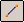
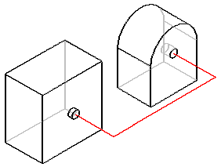
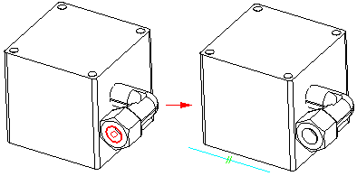
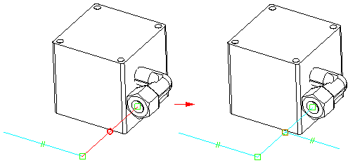

Line Segment commandCreates a line segment in 3D space. You can use the line segments to construct tube parts in the XpresRoute application, and to construct frame parts in the Frame Design application.

The XpresRoute and Frame Design applications are available on the Tools tab→Environs group.
Defining path segment points
When defining a path segment start or end point, you can click a point in free space. Free space keypoints do not support associativity. For example, if you select a free space point and locate a reference plane, the start point will lie on the reference plane, but it will not be associative.
You can also use part and assembly geometry to define a path segment start or end point. If you want to define the start or end point relative to a keypoint, hold the O key down and click the keypoint. You can then use the dX, dY, dZ value fields on the command bar to define the offset of the segment relative to the selected keypoint. For example, you can click a circle and offset the path segment relative to the selected keypoint.

After holding the O key down, you can use the N key to change the dx, dy, dz orientation.
You can click an existing segment to place a keypoint on the segment.

When defining the direction for a path segment, you can use the OrientXpres tool to specify that the segment remains parallel to an axis or plane. You can also locate a linear part edge or planar object to define the direction of the path segment. This creates a parallel relationship between the selected object and the path segment.
By pressing the R key, an entry is added to the registry and all locatable objects introduced in v16 become non-locatable. Pressing the R key again changes the registry entry so that these objects become locatable again.